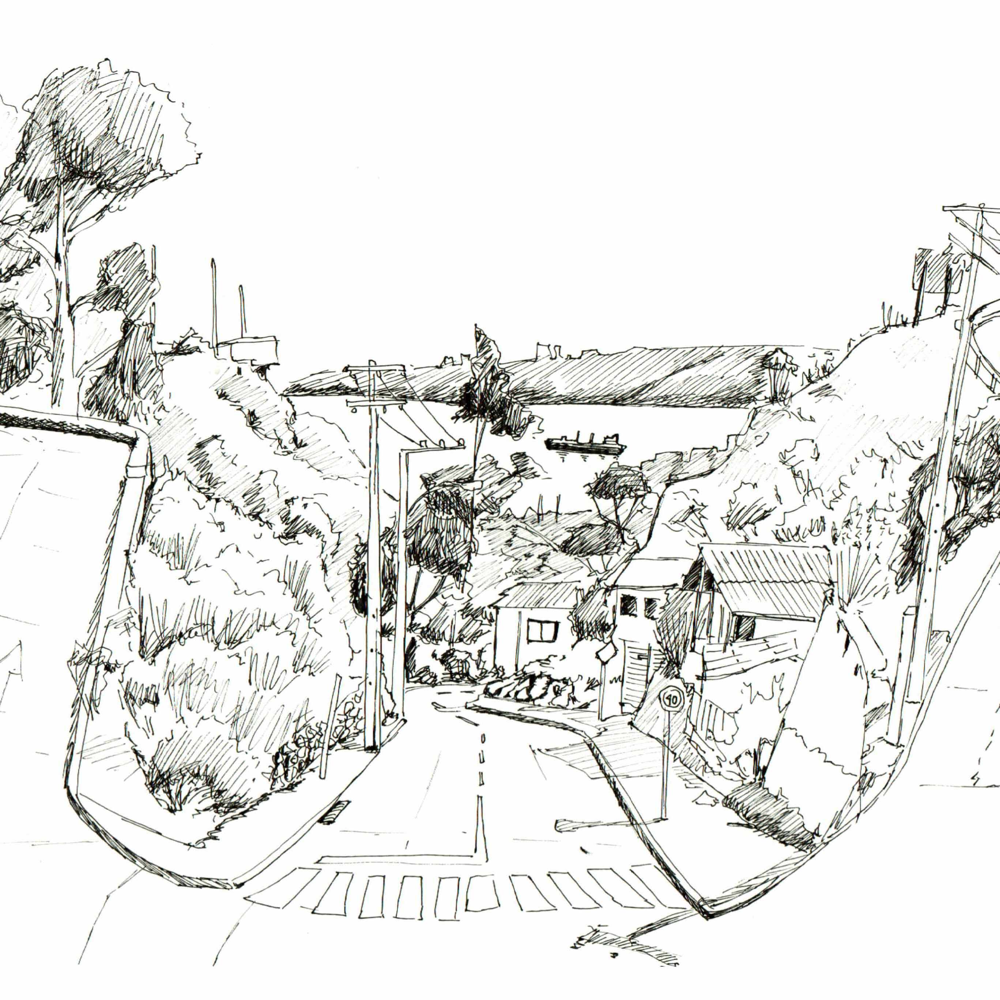

Estudios de obras

Estudio a los cuadernos de dibujos de Leonardo Da Vinci, dibujos de los grabados de Durero, el grabado de Rembradt, estudio de la conjugación de colores para expresar la luz en la obra pictórica de Henri Matisse y su dibujo a plumilla, entre otros.
Croquis

Valparaíso
Croquis realizados en distintas localidades de Valparaíso, en observación respecto a la luminosidad y a gestos de las personas dependiendo de su contexto.

Punta Arenas
Durante una travesía realizada a Punta Arenas junto a mi taller de tercer año de diseño, se observó el borde del Estrecho de Magallanes, la pampa y Tierra del Fuego

Ritoque
Con el fin de construir un recorrido que acompañara a la lectura en la Ciudad abierta, se busca una nueva manera de abstraer el lugar, dibujando a la obra sin dibujarla en si misma (...)
Caligrafía


Durante el imperio romano se desarrollan 4 tipos de escritura caligráfica: Cuadrada, Rústica, Uncial y Semiuncial.Tras la caída del imperio romano, surgen diferentes variables de caligrafía que se ven influenciados por las invasiones bárbaras. Con el surgimiento del imperio Carolingio, Carlo Magno busca unificar la escritura con la caligrafía Carolingia. A su vez aparece la escritura gótica.
Tipografía